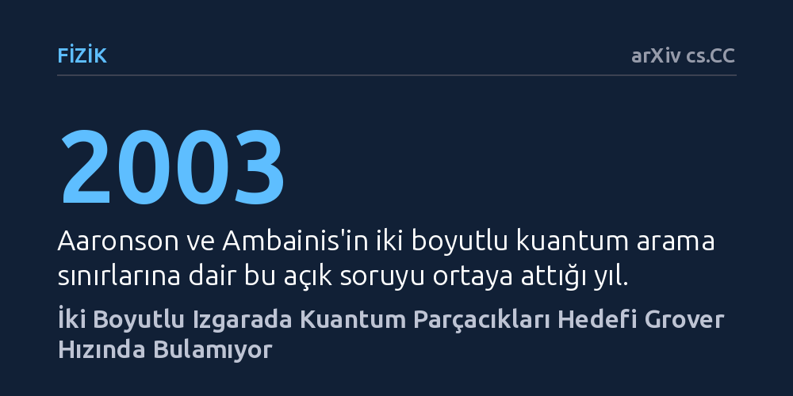

FIZIK · arXiv cs.CC · 2026-10-20
İki boyutlu bir ızgarada kuantum yürüyüşüyle hedefin Grover hızında bulunup bulunamayacağı araştırıldı. Klasik elektrostatikle kurulan matematiksel bağ, arama süresinin Grover sınırından daha yavaş olan ek bir logaritmik faktör gerektirdiğini kanıtladı.
Kuantum algoritmalarının fiziksel ızgara düzeninde her zaman standart Grover hızlandırmasını sağlayamayacağını, uzamsal geometrinin arama hızına kesin sınırlar koyduğunu gösterir.

Kuantum bilgisayarlarının en çok vadedilen üstünlüklerinden biri, sıralanmamış bir veri tabanında arama yaparken klasik yöntemlerden belirgin biçimde hızlı olmalarıdır. Klasik bir bilgisayar N adet kutudan birinde saklanan hedefi ortalama N/2 denemede bulabilirken, standart Grover kuantum algoritması bunu yaklaşık kök N adımda başarır. Ancak bu teorik hızlanma, her veriye her an eşit mesafede ve anında erişilebildiği varsayımına dayanır.
Gerçek dünyada veriler veya kuantum parçacıkları genellikle uzamsal bir ağ ya da iki boyutlu bir ızgara üzerinde bulunur. Bir kuantum parçacığı sadece komşu düğümler arasında sıçrayarak ilerlediğinde—ki buna kuantum yürüyüşü denir—geometrinin getirdiği gecikmeler devreye girer. Scott Aaronson ve Andris Ambainis, 2003 yılında temel bir açık soru ortaya atmıştı: İki boyutlu bir ızgarada dolaşan bir kuantum parçacığı, aranan hedefi Grover hızında bulabilir mi, yoksa düzlemin kısıtları buna engel mi olur?
Yazar Weikang Li, bu problemi çözmek için kuantum mekaniği ile 19. yüzyılın klasik elektrostatik fiziği arasında beklenmedik bir matematiksel eşleşme kuruyor. Geliştirilen yöntemde, ızgara üzerindeki aranan işaretli nokta sanki noktasal bir elektrik yüküymüş gibi ele alınıyor. Parçacığın hedefi bulup bulmadığını gösteren kuantum durum örtüşmesi ise bu yükün yarattığı potansiyel düşüşüyle ağırlıklandırılıyor.
Bu analoji sayesinde arama sürecindeki bilgi aktarımı, elektrik alanındaki enerji değişimiyle birebir denk hale geliyor. Yürüyüşçünün ızgara üzerindeki yerel adımları, sistemin potansiyelini ancak elektrik alan enerjisinin izin verdiği bir hızla değiştirebiliyor. Böylece hedefe ulaşmak için gereken en az adım sayısı, elektrostatikteki bir yükün kendi potansiyeliyle (öz-potansiyel) doğrudan sınırlanmış oluyor.
Matematiksel kanıt, iki boyutlu bir düzlemde noktasal yükün öz-potansiyelinin sistem boyutu büyüdükçe logaritmik olarak arttığını ortaya koyuyor. Bu durum, kuantum yürüyüşçüsünün hedefi bulması için gereken asgari süreye fazladan bir logaritmik kök çarpanı ekliyor. Parçacık sınırsız hafızaya ve ücretsiz sorgulama hakkına sahip olsa bile Grover'ın kök N süresinde hedefe ulaşamıyor; mutlaka kök N ile logaritma N çarpımının karekökü kadar yerel adım atmak zorunda kalıyor.
Bu bulgu, Tulsi tarafından daha önce önerilmiş olan kuantum arama algoritmasının ulaşılabilecek en iyi (asimptotik olarak en uygun) sınırda çalıştığını ispatlıyor. Ayrıca çalışmada birden fazla hedef olması durumu bir iletkenin sığasıyla açıklanarak, arama süresinin hedeflerin ızgara üzerindeki yerleşim geometrisine bağlı olduğu gösteriliyor.